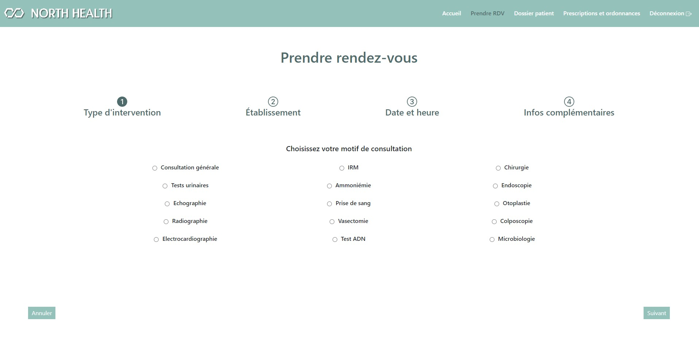
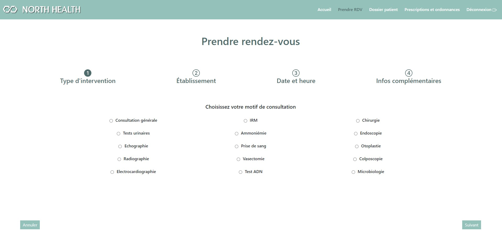

Projets
Durant la formation
North Health (application web)
Dans le cadre de l'epreuve E5 de mon BTS SIO, cette application est destinée à la prise de rendez-vous médicaux et à la consultation d'ordonnances pour les patients.
Par manque de temps, je n'ai pas pu développer les applications mobile et lourde mais les maquettes et diagrammes ont été réalisés.
- Création des maquettes IHM web, mobile et lourde.
- Création de diagrammes UML (cas d'utilisation, activité, classe).
- Création de la base de données.
Langages :
- HTML
- CSS
- Javascript
- PHP
- SQL
Base de données :
- MySQL
- MySQL Workbench
Cloud bdd : Stackhero
IDE : Visual Studio Code
Versionning : GitHub
Hébergement : Heroku
 

Portfolio
Ce même portfolio sur lequel vous vous trouvez !
Langages :
- HTML
- CSS
Cloud bdd : Stackhero
IDE : Visual Studio Code
Versionning : GitHub
Hébergement : Netlify
Lien GithubDurant le stage
SEO - Audit de sites web
J'ai travaillé presque exclusivement sur le SEO pendant mon stage, et pour une longue liste d'entreprises.
- Étude de mots-clés.
- Recherche lexicale.
- Benchmark concurrentiel.
- Optimisation meta-données, mots-clés prioritaires.
- Linking / netlinking / backlinking.
- Audit des performances et de sites internet.
- Redaction web.
Les outils et sites utilisés :
- Semrush
- Textbroker
- Scribeur
- Rocketlinks
- AnswerThePublic
- Ubersuggest
- Google Trends
- YourtextGuru
- Siteimprove
- SeoQuantum
- HeadingsMap (extension Chrome)
- Web Developer (extension Chrome)
Blog People&Baby
Dans le cadre d'une stratégie marketing, le but était d'occuper les résultats de recherche en créant ce nouveau blog, et en l'optimisant niveau SEO à l'aide de l'extension Yoast SEO. Le template, qui a été fourni par le client, a été re-travaillé via Elementor.
- Traduction de l'anglais au français.
- Meta-données.
- Alt attributs.
- Inclusion de liens.
- Changer le thème couleur pour un raccord avec les couleurs de l'entreprise.
CMS : WordPress
Lien vers le blog Lien OneDrive
Recettage
Ce recettage a été fait dans le cadre du lancement d'un nouveau site du groupe ADDIPLAST.
J'ai fais la comparaison entre l'ancien site et le nouveau site avant qu'il ne soit déployé via WordPress.
Il a fallu voir plusieurs critères :
_ La correspondance/redirection des urls anciennes et nouvelles (et ré-écriture si nécessaire).
_ Les meta-données (présentes ou non, longueur, optimisation).
_ La présence des mots-clés qui optimisent le SEO.
_ Vérifier ou rajouter les attributs alt des images.
_ Vérifier le fonctionnement des liens.
_ Faire des remarques/suggestions sur les problèmes visuels.
_ Répertorier les pages OK et 404.
_ Corriger les doublons.
J'ai pu me référer au fichier Sitemap.xml, à une charte edito nommage établie par le client et mon entreprise d'accueil, ainsi qu'aux données générées par la Google Search Console.
Lien vers le site Lien OneDrive
Veille technologique
J'ai réalisé un travail de veille, analyse et synthèse sur le référencement des contenus YMYL (Your Money Your Life). Mon objectif était de comprendre ce que ce terme signifie et de définir des recommandations pour la création de contenus YMYL, en particulier pour les pages à thématique santé.
Mes sources :
- Documents Google. Notamment la marche à suivre des Search Quality Raters.
- Collecte et tri des informations depuis de nombreux sites comme Be More You, Hill Web Creations, Web Rank Info etc...
- Newsletter du site Backlinko ou encore celle du blog Semrush.